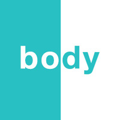
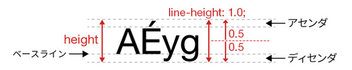

ページ全体の文字指定（初期値作成）

- プロンプト例
CSSのbodyをページ全体の文字の初期値を設定するセレクタとして扱うには？
body セレクタは「ページ全体の文字スタイルの初期値」を設定する場所として使うのが定石です。
基本の考え方
- bodyは、resetとは別でページの文字の初期値を設定する
- ページ全体に反映したい文字の値は「body」に指定します（継承）
- 基本的には、文字情報のみ
- 文字色、line-heightは適宜変更する場合があります
body { color: #333; font-size: 16px; font-family: "Noto Sans JP", sans-serif; line-height: 1.0; }
こう書くことで：
- ページ全体の フォント
- 文字サイズ
- 行間
- 文字色
の「デフォルト値」を一括指定できます。
これは CSSの継承（inheritance） の仕組みにより、
body に指定した文字関連プロパティが、ほぼすべての子要素に引き継がれるためです。
なぜ body が適切なのか？
1. 文字系プロパティは継承される
以下のプロパティは 自動的に子要素に継承 されます。
- color
- font-size
- font-family
- line-height
- letter-spacing
→ つまり body に書けば、ページ全体に反映されます。
2. html ではなく body を使う理由
html { font-size: 16px; }
とするケースもありますが、一般的には：
- 文字の基本 → body
- remの基準サイズ → html
という使い分けが多いです。
html { font-size: 100%; } body { font-size: 1.0rem; /* 1.0rem = 16px */ }
文字のプロパティ
- color : 文字の色
- font-size : 文字の大きさ
- font-family : フォントの種類
- font-weight : 文字の太さ
- font-style : 文字のスタイル
- line-height : 文章の行間
個別の値が指定されなかった場合は、ブラウザの初期値が設定されます。
よく使われる初期化セット（実用テンプレ）
html { font-size: 100%; } body { background-color: #fff; color: #333; font-size: 1.0rem; font-family: sans-serif; line-height: 1.0; }
よくあるNGパターン
❌ 全要素に * で指定
* { font-family: sans-serif; }
理由
- パフォーマンスが落ちる
- フォーム部品や疑似要素にも影響して事故りやすい
背景色
- 背景色を「白」に設定（この記述がないと、スマートフォンで「ダークモード」にすると黒い文字は読むことができなくなります）
body { background-color: #fff; }
font-size
- 文字の表示される大きさ
- 単位は、「px、em、rem、％、vw」などが設定できます
- px（画面サイズの可変や、他要素の単位や大きさに関わらずサイズが固定される絶対値です）
- ％（指定する要素の親要素に対する相対値です）
- em（親要素のフォントサイズに影響を受ける単位です）
- rem（ルート要素のフォントサイズが基準になります）
- vw（vwは「viewport width」の略で、画面幅を100とした時の単位になるため、1vwであればビューポート幅の 1%ということになります）
font-family
- 複数の書体名を記述する場合は、頻度の少ないものから順に記述し、最後に「総称ファミリー名」を記述します
- Neue, [nɔ́Yə]-ドイツ語：ノイエ（新しい）
記述例
- 英字→日本語→汎用（自動的にこの順番で適用されます）
- スマートフォンの場合、この書体は「スマートフォンの書体（デバイスフォント）」に変更されます
body { font-family: "Helvetica Neue", Arial, "Hiragino Kaku Gothic ProN", "Hiragino Sans", Meiryo, sans-serif; }
- 最小指定は「sans-serif（総称ファミリー名）」のみ、各ブラウザーではデバイスフォントで表示されます
body { font-family: sans-serif; }
line-height
- １行の height の中心から次の行の height の中心までの距離
- リセットする場合は、「1.0」（単位なし）にする（適宜、変更します）
- 日本語での読みやすさを考えると「1.6〜1.8」の間で指定する
※ブラウザの初期値は「1.5」

body記述例
- resetと同様に「コメント」を入れて他のCSSと区別し見やすくします
/*----------------------------------------- body -----------------------------------------*/ body { background-color: #fff; color: #333; font-size: 16px; font-family: "Helvetica Neue", Arial, "Hiragino Kaku Gothic ProN", "Hiragino Sans", Meiryo, sans-serif; line-height: 1.0 }
まとめ
- 初心者のサイト制作では、以下の最低限のリセットにとどめます
- 必要に応じて追加記述します